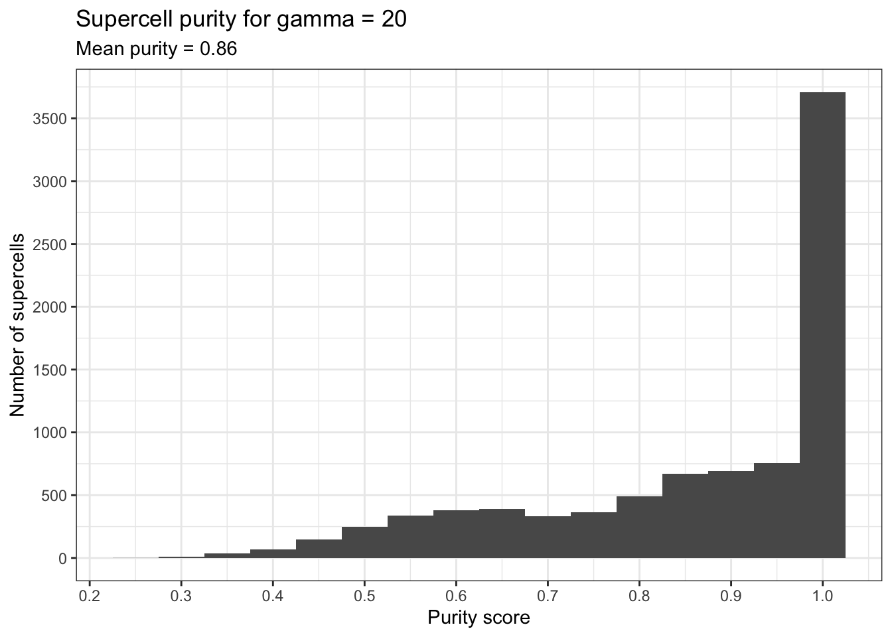
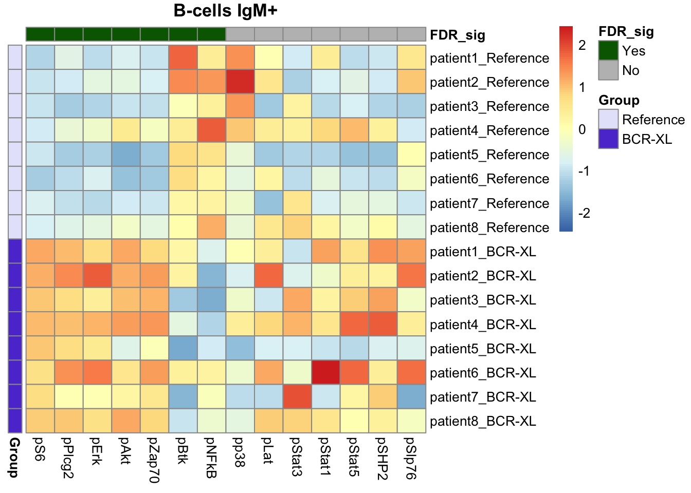
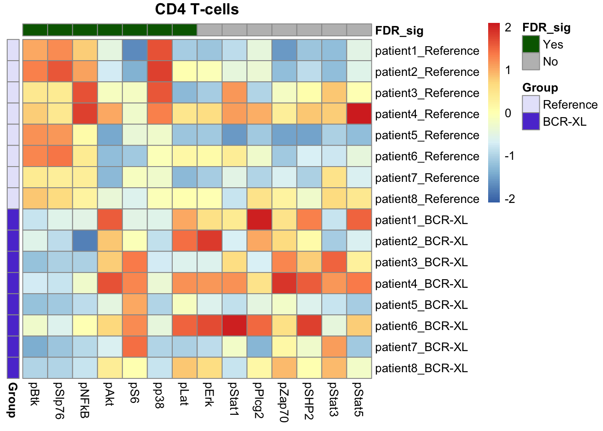
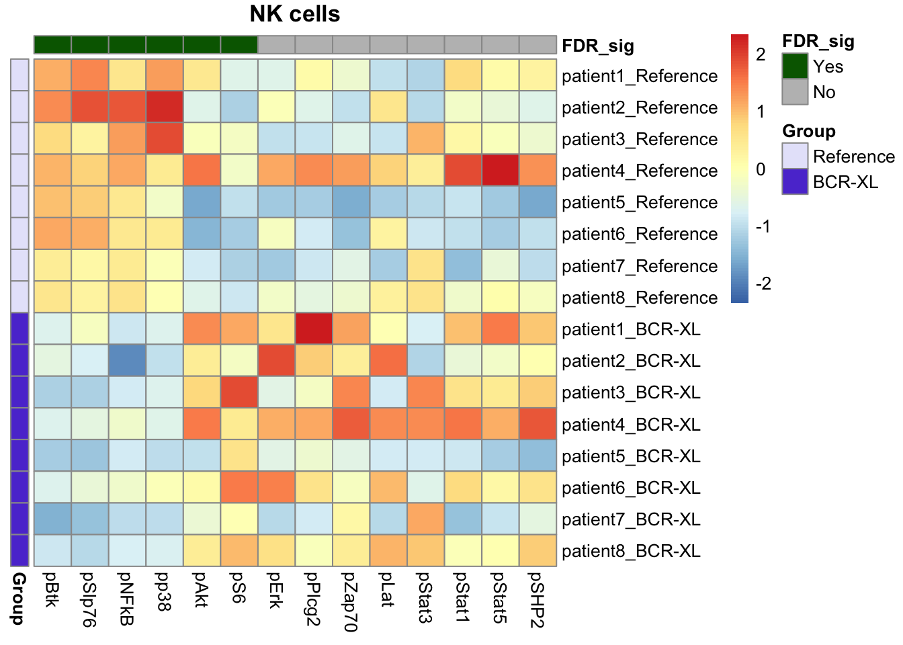

Last updated: 2023-07-28
Checks: 7 0
Knit directory: SuperCellCyto-analysis/
This reproducible R Markdown analysis was created with workflowr (version 1.7.0). The Checks tab describes the reproducibility checks that were applied when the results were created. The Past versions tab lists the development history.
Great! Since the R Markdown file has been committed to the Git repository, you know the exact version of the code that produced these results.
Great job! The global environment was empty. Objects defined in the global environment can affect the analysis in your R Markdown file in unknown ways. For reproduciblity it’s best to always run the code in an empty environment.
The command set.seed(42) was run prior to running the
code in the R Markdown file. Setting a seed ensures that any results
that rely on randomness, e.g. subsampling or permutations, are
reproducible.
Great job! Recording the operating system, R version, and package versions is critical for reproducibility.
Nice! There were no cached chunks for this analysis, so you can be confident that you successfully produced the results during this run.
Great job! Using relative paths to the files within your workflowr project makes it easier to run your code on other machines.
Great! You are using Git for version control. Tracking code development and connecting the code version to the results is critical for reproducibility.
The results in this page were generated with repository version 402358b. See the Past versions tab to see a history of the changes made to the R Markdown and HTML files.
Note that you need to be careful to ensure that all relevant files for
the analysis have been committed to Git prior to generating the results
(you can use wflow_publish or
wflow_git_commit). workflowr only checks the R Markdown
file, but you know if there are other scripts or data files that it
depends on. Below is the status of the Git repository when the results
were generated:
Ignored files:
Ignored: .DS_Store
Ignored: .Rproj.user/
Ignored: code/.DS_Store
Ignored: data/.DS_Store
Ignored: data/bodenmiller_cytof/
Ignored: data/explore_supercell_purity_clustering/
Ignored: data/haas_bm/
Ignored: data/oetjen_bm_dataset/
Ignored: data/trussart_cytofruv/
Ignored: output/.DS_Store
Ignored: output/bodenmiller_cytof/
Ignored: output/explore_supercell_purity_clustering/
Ignored: output/label_transfer/
Ignored: output/oetjen_b_cell_panel/
Ignored: output/trussart_cytofruv/
Untracked files:
Untracked: README.html
Untracked: analysis/ref.bib
Untracked: code/README.html
Untracked: code/b_cell_identification/
Untracked: code/batch_correction/
Untracked: code/bodenmiller_data/
Untracked: code/explore_supercell_purity_clustering/
Untracked: code/label_transfer/
Untracked: data/README.html
Untracked: output/README.html
Unstaged changes:
Modified: .gitignore
Modified: README.md
Modified: _workflowr.yml
Modified: analysis/_site.yml
Modified: code/README.md
Modified: data/README.md
Modified: output/README.md
Note that any generated files, e.g. HTML, png, CSS, etc., are not included in this status report because it is ok for generated content to have uncommitted changes.
These are the previous versions of the repository in which changes were
made to the R Markdown (analysis/de_test.Rmd) and HTML
(docs/de_test.html) files. If you’ve configured a remote
Git repository (see ?wflow_git_remote), click on the
hyperlinks in the table below to view the files as they were in that
past version.
| File | Version | Author | Date | Message |
|---|---|---|---|---|
| Rmd | 402358b | Givanna Putri | 2023-07-28 | wflow_publish(c("analysis/*Rmd")) |
In this analysis, we assess whether a differential expression analysis performed at the supercell level can recapitulate previously published findings obtained by performing differential expression analysis using the Diffcyt algorithm (Weber et al. 2019) at the single cell level.
Specifically, we analysed a publicly available mass cytometry dataset quantifying the immune cells in stimulated and unstimulated human peripheral blood cells (BCR_XL dataset (Bodenmiller et al. 2012)). This is a paired experimental design, with each of the 8 independent samples, obtained from 8 different individuals, contributing to both stimulated and unstimulated samples (16 samples in total).
This dataset was previously analysed using Diffcyt to identify the cell state markers that were differentially expressed between the stimulated samples (BCR-XL group) and the unstimulated samples (Reference group).
Our aim was to replicate these findings using a combination of
SuperCellCyto and the Limma R package (Ritchie et
al. 2015). The analysis protocol is as the following. First the
data was downloaded using the HDCytoData package and an arcsinh
transformation with cofactor 5 was applied. Subsequently, SuperCellCyto
was applied on the data. The relevant scripts can be found in
code/bodenmiller_data/download_bodenmiller_data.R and
code/bodenmiller_data/run_supercell_bodenmiller_data.R.
The findings reported here represent the results following the application of SuperCellCyto.
library(data.table)
library(ggplot2)
library(limma)
library(pheatmap)
library(gridExtra)
library(here)
library(SuperCell)
supercell_cell_map <- fread(here("output", "bodenmiller_cytof", "20230522", "supercell_gamma20_cell_map.csv"))
cell_info <- fread(here("output", "bodenmiller_cytof", "20230522", "cell_info_with_cell_id.csv"))
supercell_mat <- fread(here("output", "bodenmiller_cytof", "20230522", "supercell_gamma20_exp_mat.csv"))
markers <- fread(here("data", "bodenmiller_cytof", "markers_info.csv"))
supercell_cell_map <- merge.data.table(
x = supercell_cell_map,
y = cell_info[, c("cell_id", "population_id"), with = FALSE],
by.x = "CellId",
by.y = "cell_id"
)Purity was calculated using the implementation provided by the SuperCell package.
supercell_purity <- as.data.table(
supercell_purity(clusters = supercell_cell_map$population_id,
supercell_membership = supercell_cell_map$SuperCellID),
keep.rownames = TRUE
)
setnames(supercell_purity, c("V1", "V2"), c("supercell_id", "purity_score"))
ggplot(supercell_purity, aes(x = purity_score)) +
geom_histogram(binwidth = .05) +
labs(
x = "Purity score",
y = "Number of supercells",
title = "Supercell purity for gamma = 20",
subtitle = paste("Mean purity =", round(mean(supercell_purity$purity_score), 2))
) +
theme_bw() +
scale_y_continuous(breaks = scales::pretty_breaks(n=10)) +
scale_x_continuous(breaks = scales::pretty_breaks(n=10))
We first annotate the supercells based on the most abundant cell type they contain. In situations where the most abundant cell type is a tie between several different cell types, the one that appears first in the sequence is used as the supercell’s annotation.
supercell_annotation <- supercell_cell_map[, .N, by = .(SuperCellID, population_id)][
order(-N), .SD[1], by = SuperCellID
]
supercell_mat <- merge.data.table(
x = supercell_mat,
y = supercell_annotation[, c("SuperCellID", "population_id")],
by.x = "SuperCellId",
by.y = "SuperCellID"
)Subsequently, we compute the mean expression of each state marker across different sample and cell type.
# Do DE test on just the cell state markers
markers_state <- paste0(markers[markers$marker_class == 'state']$marker_name, "_asinh_cf5")
supercell_mean_perSampPop <- supercell_mat[, lapply(.SD, mean), by = c("sample_id", "population_id"), .SDcols = markers_state]
# Add in the group details and the patient id
sample_info <- unique(cell_info, by = c("group_id", "patient_id", "sample_id"))
sample_info[, c("cell_id", "population_id") := list(NULL, NULL)]
supercell_mean_perSampPop <- merge.data.table(supercell_mean_perSampPop, sample_info, by = "sample_id")
supercell_mean_perSampPop[, `:=`(
group_id = factor(group_id, levels=c("Reference", "BCR-XL")),
patient_id = factor(patient_id, levels=paste0("patient", seq(8))),
sample_id = factor(sample_id)
)]
supercell_mean_perSampPop <- supercell_mean_perSampPop[order(group_id)]For each cell type, we then used the limma package to identify state
markers that are differentially expressed across the 2 conditions.
Specifically, we take into account the paired experimental design and
use the treat function with fc=1.1 to compute
empirical Bayes moderated-t p-values relative to the minimum fold-change
threshold set using the fc parameter.
cell_types <- c("B-cells IgM+", "CD4 T-cells", "NK cells")
limma_res_supercell <- lapply(cell_types, function(ct) {
pseudobulk_sub <- supercell_mean_perSampPop[population_id == ct]
groups <- pseudobulk_sub$group_id
# Taking into account the paired measurement
patients <- pseudobulk_sub$patient_id
design <- model.matrix(~0 + groups + patients)
colnames(design) <- gsub("groups", "", colnames(design))
colnames(design) <- gsub("-", "_", colnames(design))
cont <- makeContrasts(
RefvsBCRXL = Reference - BCR_XL,
levels = colnames(design)
)
fit <- lmFit(t(pseudobulk_sub[, markers_state, with = FALSE]), design)
fit_cont <- contrasts.fit(fit, cont)
fit_cont <- eBayes(fit_cont, trend=TRUE, robust=TRUE)
treat_all <- treat(fit_cont, fc=1.1)
res <- as.data.table(
topTreat(treat_all, number = length(markers_state)),
keep.rownames = TRUE
)
# rename the rowname column as marker rather than "rn"
setnames(res, "rn", "marker")
res[, cell_type := ct]
return(res)
})
limma_res_supercell <- rbindlist(limma_res_supercell)Finally we use heatmap to assess the results returned by limma.
# 1 panel per population
pheatmap_sample_info <- copy(sample_info)
pheatmap_sample_info[, `:=`(
group_id = factor(group_id, levels = c("Reference", "BCR-XL")),
patient_id = factor(patient_id, levels = paste0("patient", seq_len(8)))
)]
setnames(pheatmap_sample_info, "group_id", "Group")
pheatmap_sample_info <- pheatmap_sample_info[order(Group, patient_id)]
pheatmap_sample_info[, patient_id := NULL]
pheatmap_sample_info <- data.frame(pheatmap_sample_info)
rownames(pheatmap_sample_info) <- pheatmap_sample_info$sample_id
pheatmap_sample_info$sample_id <- NULL
cell_types_to_plot <- c("B-cells IgM+", "CD4 T-cells", "NK cells")
heatmaps <- lapply(cell_types_to_plot, function(ct) {
# state markers status based on limma result
markers_states_info <- limma_res_supercell[cell_type == ct,]
markers_states_info[, FDR_sig := factor(ifelse(adj.P.Val <= 0.05, "Yes", "No"), levels = c("Yes", "No")) ]
markers_states_info[, marker := gsub("_asinh_cf5", "", marker)]
markers_states_info <- markers_states_info[order(FDR_sig)]
markers_states_info <- data.frame(markers_states_info[, c("marker", "FDR_sig")])
rownames(markers_states_info) <- markers_states_info$marker
markers_states_info$marker <- NULL
# filter to keep only a population,
# change the ordering of rows (samples) to suit sample_info so "reference"
# group comes first,
# set sample_id as row names
# rename the columns to remove _asinh
# reorganise the columns so the significant ones come first
pheatmap_data <- supercell_mean_perSampPop[population_id == ct,]
pheatmap_data[, sample_id := factor(sample_id, levels = rownames(pheatmap_sample_info))]
rownames(pheatmap_data) <- pheatmap_data$sample_id
pheatmap_data[, population_id := NULL]
setnames(pheatmap_data, markers_state, gsub("_asinh_cf5", "", markers_state))
pheatmap_data[, c("patient_id", "group_id") := list(NULL, NULL)]
setcolorder(pheatmap_data, c("sample_id", rownames(markers_states_info)))
pheatmap_mat <- as.matrix(pheatmap_data, rownames = "sample_id")
pheatmap(
mat = pheatmap_mat,
cluster_cols = FALSE,
annotation_row = pheatmap_sample_info,
annotation_col = markers_states_info,
main = ct,
cluster_rows = FALSE,
annotation_colors = list(
Group = c("Reference" = "#E6E6FA", "BCR-XL" = "#5D3FD3"),
FDR_sig = c("Yes" = "darkgreen", "No" = "grey")
),
scale = "column"
)
})
Our findings were consistent with those identified by Diffcyt, including elevated expression of pS6, pPlcg2, pErk, and pAkt in B cells in the stimulated group, along with reduced expression of pNFkB in the stimulated group.
We also recapitulated the Diffcyt results in CD4 T cells and Natural Killer (NK) cells, with significant differences in the expression of pBtk and pNFkB in CD4 T cells between the stimulated and unstimulated groups, and distinct differences in the expression of pBtk, pSlp76, and pNFkB in NK cells between the stimulated and unstimulated groups.
sessionInfo()R version 4.2.3 (2023-03-15)
Platform: aarch64-apple-darwin20 (64-bit)
Running under: macOS Monterey 12.6
Matrix products: default
BLAS: /Library/Frameworks/R.framework/Versions/4.2-arm64/Resources/lib/libRblas.0.dylib
LAPACK: /Library/Frameworks/R.framework/Versions/4.2-arm64/Resources/lib/libRlapack.dylib
locale:
[1] en_US.UTF-8/en_US.UTF-8/en_US.UTF-8/C/en_US.UTF-8/en_US.UTF-8
attached base packages:
[1] stats graphics grDevices utils datasets methods base
other attached packages:
[1] SuperCell_1.0 here_1.0.1 gridExtra_2.3 pheatmap_1.0.12
[5] limma_3.54.1 ggplot2_3.4.1 data.table_1.14.8 workflowr_1.7.0
loaded via a namespace (and not attached):
[1] statmod_1.5.0 tidyselect_1.2.0 xfun_0.39 bslib_0.4.2
[5] splines_4.2.3 colorspace_2.1-0 vctrs_0.5.2 generics_0.1.3
[9] htmltools_0.5.4 yaml_2.3.7 utf8_1.2.3 rlang_1.0.6
[13] jquerylib_0.1.4 later_1.3.0 pillar_1.8.1 glue_1.6.2
[17] withr_2.5.0 RColorBrewer_1.1-3 lifecycle_1.0.3 stringr_1.5.0
[21] munsell_0.5.0 gtable_0.3.1 evaluate_0.20 knitr_1.42
[25] callr_3.7.3 fastmap_1.1.0 httpuv_1.6.9 ps_1.7.2
[29] fansi_1.0.4 highr_0.10 Rcpp_1.0.10 promises_1.2.0.1
[33] scales_1.2.1 cachem_1.0.6 jsonlite_1.8.4 farver_2.1.1
[37] fs_1.6.1 digest_0.6.31 stringi_1.7.12 processx_3.8.0
[41] dplyr_1.1.0 getPass_0.2-2 rprojroot_2.0.3 grid_4.2.3
[45] cli_3.6.0 tools_4.2.3 magrittr_2.0.3 sass_0.4.5
[49] tibble_3.1.8 whisker_0.4.1 pkgconfig_2.0.3 rmarkdown_2.20
[53] httr_1.4.4 rstudioapi_0.14 R6_2.5.1 git2r_0.31.0
[57] compiler_4.2.3